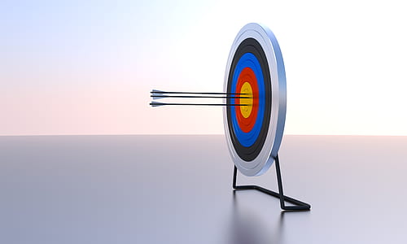

Are you an outside person? Do you enjoy precision and have fine motor skills? Then archery is the hobby for you! Archery is a sport that has a person aim a bow onto a target with a bow. Archery is not an easy sport so you must be willing to be patience and passionate to learn the sport. Even take just one shot can take a while to get a good one! Some of the traits that would help you with archery would be:
Concentration
Self Possessed (Calm mind)
Positive
Curious and Willing to learn
This will take you off site